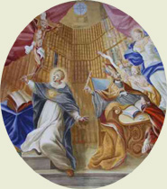

|  |
|---|
[65296] De unione Verbi, pr. 1 Et primo enim quaeritur, utrum haec unio facta sit in persona, vel in natura.
[65297] De unione Verbi, pr. 2 Secundo utrum in Christo sit una tantum hypostasis.
[65298] De unione Verbi, pr. 3 Tertio utrum Christus sit unum neutraliter, vel duo.
[65299] De unione Verbi, pr. 4 Quarto utrum in Christo sit unum tantum esse.
[65300] De unione Verbi, pr. 5 Quinto utrum in Christo sit una tantum operatio.
[65302] De unione Verbi, a. 1 tit. 2 Videtur autem quod in natura.
[65303] De unione Verbi, a. 1 arg. 1 Dicit enim Athanasius quod sicut anima rationalis et caro unus est homo; ita Deus et homo unus est Christus. Sed anima rationalis et caro uniuntur in unam naturam humanam. Ergo Deus et homo uniuntur in unam naturam Christi.
[65304] De unione Verbi, a. 1 arg. 2 Praeterea, Damascenus dicit in III libro: hoc facit haereticis errorem, quia dicunt idem naturam et hypostasim. Sed hoc non videtur falsum esse: quia in quolibet simplici, et praecipue in Deo, idem est suppositum et natura. Ergo non est falsum quod haeretici dicunt, quod si unio facta sit in persona, sit facta in natura.
[65305] De unione Verbi, a. 1 arg. 3 Praeterea, Damascenus dicit in III libro, quod inconvertibiliter et inalterabiliter unitae sunt ad invicem duae naturae. Sed unio naturarum videtur importare unionem naturalem. Ergo unio facta est in natura.
[65306] De unione Verbi, a. 1 arg. 4 Praeterea, in omnibus illis in quibus suppositum aliquid habet praeter naturam speciei, vel accidens vel naturam individualem necesse est quod differat suppositum a natura, ut patet per philosophum in VII Metaph. Sed si unio humanae naturae ad verbum non est facta in natura humana, non pertinebit ad naturam speciei ipsius verbi. Ergo sequetur quod suppositum verbi sit aliud a natura divina; quod est impossibile. Videtur ergo quod unio facta sit in natura.
[65307] De unione Verbi, a. 1 arg. 5 Praeterea, omnis unio terminatur ad aliquod unum, quod est posterius ipsa unione. Sed unitas personae verbi, cum sit aeterna, non est posterior unione quae facta est in plenitudine temporis. Ergo unio non est facta in persona.
[65308] De unione Verbi, a. 1 arg. 6 Praeterea, unio importat additamentum quoddam. Unde non potest fieri unio in aliquo quod est summae simplicitatis. Sed persona verbi, cum sit vere Deus, est summae simplicitatis. Ergo in persona verbi non potest fieri unio.
[65309] De unione Verbi, a. 1 arg. 7 Praeterea, duo quae non sunt unius generis, non possunt in aliquo uniri: ex linea enim et albedine non fit unum. Sed humana natura multo plus differt a divina quam ea quae differunt genere. Ergo non potest simul humanae et divinae naturae unio fieri in persona una.
[65310] De unione Verbi, a. 1 arg. 8 Praeterea, persona et natura verbi differunt solum secundum modum intelligendi, in quantum in persona verbi importatur relatio originis, non autem in natura. Sed per relationem originis verbum non refertur ad humanam naturam, sed ad patrem. Ergo eodem modo se habent ad naturam assumptam persona verbi, et natura eius. Si ergo est facta unio in persona, erit facta unio in natura.
[65311] De unione Verbi, a. 1 arg. 9 Praeterea, incarnatio excitat nos ad Deum incarnatum diligendum. Sed non debemus plus diligere unam personam divinam quam aliam; quia quorum est eadem bonitas, debet esse eadem dilectio. Ergo unio incarnationis facta est in natura communi tribus personis.
[65312] De unione Verbi, a. 1 arg. 10 Praeterea, secundum philosophum in II de anima, vivere viventibus est esse. Sed in Christo est duplex vita, scilicet humana et divina. Ergo est illi duplex esse, et per consequens duplex persona: esse enim est suppositi vel personae. Non ergo facta est unio in persona.
[65313] De unione Verbi, a. 1 arg. 11 Praeterea, sicut forma partis comparatur ad materiam, ita forma totius ad suppositum. Sed forma partis non potest esse nisi in materia propria. Ergo forma totius, quae est natura, non potest esse nisi in proprio supposito, quod est persona humana. Et eadem ratione natura divina est etiam in persona divina. Ergo, si sint ibi duae naturae, oportet quod sint ibi duae personae.
[65314] De unione Verbi, a. 1 arg. 12 Praeterea, omne quod vere praedicatur de aliquo, potest supponere pro ipso. Sed natura divina vere praedicatur de persona verbi. Ergo potest supponere pro ipsa. Si ergo facta est unio in persona, vere potest dici quod facta sit unio in natura.
[65315] De unione Verbi, a. 1 arg. 13 Praeterea, omne quod unitur alicui, aut unitur ei essentialiter aut accidentaliter. Sed humana natura non unitur verbo accidentaliter, quia sic retineret suam personalitatem, et essent duae personae. Omnis enim substantia alteri adveniens retinet suam singularitatem; sicut vestis induta, et equus equitantis. Ergo advenit ei essentialiter quasi pertinens ad essentiam vel naturam verbi. Est ergo unio facta in natura.
[65316] De unione Verbi, a. 1 arg. 14 Praeterea, nihil quod comprehenditur sub alio, extendit se ad aliquid extrinsecum; sicut quod comprehenditur loco non est in exteriori loco. Sed suppositum cuiuslibet naturae comprehenditur sub natura illa, unde et dicitur res naturae. Sic enim comprehenditur individuum sub specie, sicut species sub genere. Cum ergo verbum sit suppositum divinae naturae, non potest se extendere ad aliam naturam ut sit eius suppositum, nisi efficiatur natura una.
[65317] De unione Verbi, a. 1 arg. 15 Praeterea, natura se habet ad suppositum per modum formalioris, et simplicioris et constituentis. Hoc autem modo non potest se habere natura humana ad personam verbi. Ergo persona verbi non potest esse persona humanae naturae.
[65318] De unione Verbi, a. 1 arg. 16 Praeterea, actio attribuitur supposito vel personae: quia actiones singularium sunt, secundum philosophum. Sed in Christo sunt duae actiones, ut Damascenus probat in libro III. Ergo sunt ibi duae personae. Non ergo facta est unio in persona.
[65319] De unione Verbi, a. 1 arg. 17 Praeterea, persona definitur esse natura proprietate distincta. Si ergo facta est unio in persona, sequitur quod facta sit unio in natura.
[65320] De unione Verbi, a. 1 s. c. 1 Sed contra. Est quod Augustinus dicit in libro de fide ad Petrum: duarum naturarum veritas manet in Christo secundum unam personam.
[65321] De unione Verbi, a. 1 s. c. 2 Praeterea, ad Orosium dicit: duas naturas cognoscimus in una persona filii.
[65322] De unione Verbi, a. 1 co. Respondeo. Dicendum quod ad evidentiam huius quaestionis, primo, oportet considerare quid est natura, secundo, quid est persona; tertio, quomodo unio verbi incarnati facta est in persona, non in natura. Sciendum est ergo, quod nomen naturae a nascendo sumitur. Unde primo est dicta natura, quasi nascitura, ipsa nativitas viventium, scilicet animalium et plantarum. Deinde tractum est nomen naturae ad principium praedictae nativitatis. Et quia huiusmodi nativitatis principium intrinsecum est, ulterius derivatum est nomen naturae ad significandum interius principium motus, secundum quod dicitur in II Physic., quia natura est principium motus in quo est, per se, non secundum accidens. Et quia motus naturalis praecipue in generatione terminatur ad essentiam speciei, ulterius essentia speciei, quam significat definitio, natura vocatur. Unde et Boetius dicit in libro de duabus naturis, quod natura est unumquodque informans specifica differentia. Et hoc modo hic natura accipitur. Ad intelligendum autem quid sit persona, considerandum est quod si aliqua res est in qua non sit aliud quam essentia speciei, ipsa essentia speciei erit per se individualiter subsistens. Et sic in huiusmodi re idem esset realiter suppositum et natura, sola ratione differens; in quantum scilicet natura dicitur prout est essentia speciei, suppositum vero in quantum per se subsistit. Si vero aliqua res sit intra quam praeter essentiam speciei, quam significat definitio, sit aliquid aliud, vel accidens vel materia individualis; tunc suppositum non erit omnino idem quod natura, sed habebit se per additionem ad naturam. Sicut apparet praecipue in his quae sunt ex materia et forma composita. Et quod dictum est de supposito, intelligendum est de persona in rationali natura: cum persona nihil aliud sit quam suppositum rationalis naturae, secundum quod Boetius dicit in libro de duabus naturis, quod persona est rationalis naturae individua substantia. Sic ergo patet quod nihil prohibet aliqua uniri in persona quae non sunt unita in natura; potest enim individua substantia rationalis naturae habere aliquid quod non pertinet ad naturam speciei, et hoc unitur ei personaliter, non naturaliter. Hoc igitur modo accipiendum est quod natura humana unita est verbo Dei in persona, non in natura: quia si non pertinet ad naturam divinam, pertinet autem ad personam ipsius, in quantum persona verbi assumendo, adiunxit sibi humanam naturam. Sed de modo huiusmodi coniunctionis dubitatio et discordia accidit. Videmus enim in creaturis quod dupliciter aliquid alicui advenit; scilicet accidentaliter, et essentialiter. Nestorius igitur, et ante ipsum Theodorus Mopsuestenus, posuerunt naturam humanam coniunctam esse verbo accidentaliter; scilicet secundum gratiae inhabitationem: ponentes quod verbum Dei unitum erat homini Christo sicut habitans in ipso ut in templo suo. Videmus autem quod omnis substantia coniuncta alteri accidentaliter, retinet seorsum suam propriam singularitatem, sicut vestis adveniens homini aut domus continens habitatorem: unde sequitur quod homo ille habuerit propriam singularitatem quae est personalitas eius. Sequebatur ergo secundum Nestorium, quod in Christo persona hominis esset distincta persona a persona verbi; et quod esset alius filius hominis, et alius filius Dei. Unde beatam virginem non confitebatur matrem Dei, sed matrem hominis.- Sed hoc est omnino absurdum. Primo quidem, quia sacra Scriptura aliter loquitur de hominibus in quibus verbum Dei habitavit per gratiam, et aliter de Christo. Nam de aliis dicit quod factum est verbum domini ad talem prophetam, sed de Christo dicit: verbum caro factum est, id est homo; quasi ipsum verbum personaliter sit homo. Secundo, quia apostolus ad Philipp. hanc unionem exinanitionem filii Dei vocat. Manifestum est autem quod inhabitatio gratiae non sufficit ad rationem exinanitionis. Alioquin exinanitio competeret non solum filio, sed etiam patri et spiritui sancto, de quo dominus dicit Ioan. XIV: apud vos manebit, et in vobis erit; et de se et patre: ad eum veniemus, et apud eum mansionem faciemus. Propter hoc igitur et multa alia, praedictus error damnatus est in Concilio Ephesino. Quidam vero cum Nestorio sustinentes humanam naturam accidentaliter verbo advenisse, voluerunt evitare dualitatem personarum quam ponebat Nestorius, ponentes quod verbum assumpsit animam et corpus sibi invicem non unita; ut sic non constitueretur persona humana ex anima et corpore. Sed ex hoc sequitur maius inconveniens, quod Christus non vere fuerit homo; cum ratio hominis consistat in unione animae et corporis. Et ideo etiam hic error damnatus est sub Alexandro III in Concilio Turonensi. Alii vero acceperunt aliam partem, ponentes naturam humanam verbo essentialiter advenire; ut quasi conflaretur una natura, sive essentia, ex natura divina et natura humana. Et ad hoc quidem Apollinaris Laodicensis tria dogmata posuit, ut Leo Papa dicit in epistola quadam ad Constantinopolitanos, quorum primum fuit quod posuit animam non esse unitam in Christo, sed verbum carni loco animae advenisse. Ut sic ex verbo et carne fieret una natura, sicut in nobis ex anima et corpore. In quo quidem dogmate Apollinaris secutus est Arium. Sed quia evangelica Scriptura expresse de anima Christi loquitur, secundum illud Ioan. X: potestatem habeo ponendi animam meam, incidit in secundum dogma, ut poneret quidem animam sensitivam esse in Christo, non autem rationalem; sed verbum fuisse homini Christo loco intellectus. Sed hoc est inconveniens; quia secundum hoc, verbum non assumpsisset humanam, sed bestialem naturam, ut Augustinus contra eum arguit in libro LXXXIII quaestionum. Tertium dogma eius fuit, quod caro Christi non est de femina sumpta sed facta de verbo in carnem mutato atque converso. Hoc autem est maxime impossibile: quia verbum Dei, cum sit vere Deus, est immutabile omnino. Unde propter haec dogmata damnatus est Apollinaris in Concilio Constantinopolitano; et Eutyches, qui eius tertium dogma secutus est, in Concilio Chalcedonensi. Sic igitur, si non est facta unio in persona sed solum secundum habitationem, secundum Nestorium, nihil novum in Christi incarnatione accidit. Quod vero facta sit unio in natura, secundum Apollinarem et Eutychen, est omnino impossibile. Cum enim species rerum sint sicut numeri, in quibus addita vel subtracta unitate variant speciem, ut dicitur in VIII Metaph., quaecumque natura est in se perfecta, impossibile est quod recipiat alterius naturae additionem. Vel, si reciperet, non esset eadem natura, sed alia. Divina autem natura est perfectissima. Similiter etiam humana natura habet perfectionem suae speciei. Unde impossibile est quod una alteri adveniat unione naturali. Et si esset possibile, iam id quod ex utroque constitueretur neque esset natura divina neque humana: et sic Christus esset neque homo neque Deus, quod est inconveniens. Relinquitur ergo quod humana natura non est unita verbo neque accidentaliter neque essentialiter, sed substantialiter, secundum quod substantia significat hypostasim, et hypostatice vel personaliter. Huius autem unionis exemplum in rebus creatis nullum est propinquius quam unio animae rationalis ad corpus, quod ponit Athanasius. Non quidem secundum quod anima est forma corporis, quia verbum non potest esse forma in materia; sed secundum quod corpus est animae instrumentum, non quidem extrinsecum et adventitium, sed proprium et coniunctum. Unde Damascenus dicit humanam naturam esse organum verbi. Esset autem adhuc similius, sicut Augustinus dicit contra Felicianum, si fingamus, sicut plerique volunt, esse in mundo animam generalem, quae passibilem materiam ad diversas formas, unam faceret secum esse personam. Sed tamen omnia huiusmodi exempla sunt deficientia: quia unio instrumenti est accidentalis; sed haec est quaedam unio singularis supra omnes modos unionis nobis notos. Sicut enim Deus est ipsa bonitas et suum esse, ita etiam est ipsa unitas per essentiam. Et ideo, sicut virtus eius non est limitata ad istos modos bonitatis et esse qui sunt in creaturis, sed potest facere novos modos bonitatis et esse nobis incognitos; ita etiam per infinitatem suae virtutis potuit facere novum modum unionis, ut humana natura uniretur verbo personaliter, non tamen accidentaliter. Quamvis ad hoc in creaturis nullum sufficiens exemplum inveniatur. Unde Augustinus dicit in epistola ad Volusianum, de hoc mysterio loquens: si ratio quaeritur, non est admirabile: si exemplum poscitur, non est singulare. Demus Deo aliquid posse, quod fateamur nos investigare non posse; in talibus enim tota ratio facti est potentia facientis. Et Dionysius dicit in cap. II de Divin. Nom.: Iesus secundum nos divina compositio, id est unio, et ineffabilis est verbo omni, et ignota menti; tamen et ipsi primo dignissimorum Angelorum.
[65323] De unione Verbi, a. 1 ad 1 Ad primum ergo dicendum quod similitudo non attenditur quantum ad hoc quod ex anima et carne sit una hominis natura; sed quantum ad hoc quod utrobique constituitur una persona.
[65324] De unione Verbi, a. 1 ad 2 Ad secundum dicendum quod quamvis in divinis natura et suppositum, sive persona, non differant realiter, differunt tamen ratione ut dictum est. Et quia idem est subsistens in natura humana et divina, non autem eadem essentia ex utroque componitur, inde est quod unio facta est in persona, ad cuius rationem pertinet subsistere; non autem ad naturam, quae importat essentiam rei.
[65325] De unione Verbi, a. 1 ad 3 Ad tertium dicendum quod naturae quidem unitae sunt in Christo; non tamen in natura, sed in persona. Quod apparet ex hoc ipso quod dicuntur inconvertibiliter et inalterabiliter naturae esse unitae.
[65326] De unione Verbi, a. 1 ad 4 Ad quartum dicendum quod haeretici, dicentes quod non est facta unio in persona, sed quod sit facta in natura, non reputabant aliud esse personam et aliud naturam nec re nec ratione; et ideo decipiebantur.
[65327] De unione Verbi, a. 1 ad 5 Ad quintum dicendum quod proprie secundum unionem dicitur aliquid unitum, sicut secundum unitatem dicitur aliquid unum. Et ideo unio non intelligitur terminari ad personam divinam secundum quod est una in se ab aeterno, sed secundum quod est unita humanae naturae in tempore. Et ita unio secundum modum intelligendi praecedit personam, non prout est una, sed prout est unita.
[65328] De unione Verbi, a. 1 ad 6 Ad sextum dicendum quod unio non dicitur fieri in persona divina, quasi ipsa persona divina constituatur ex duobus sibi invicem unitis. Hoc enim eius summae simplicitati repugnaret. Sed dicitur unio esse facta in persona, in quantum divina persona simplex subsistit in duabus naturis, scilicet divina et humana.
[65329] De unione Verbi, a. 1 ad 7 Ad septimum dicendum quod duo quae sunt diversa secundum genus, non uniuntur in una essentia vel natura; nihil tamen prohibet quin uniantur in uno supposito. Sicut ex linea et albedine non fit aliqua essentia; inveniuntur tamen in uno supposito.
[65330] De unione Verbi, a. 1 ad 8 Ad octavum dicendum quod persona filii Dei dupliciter potest considerari. Uno modo secundum communem rationem personae, prout significat quoddam subsistens; et secundum hoc unio facta est in persona secundum rationem personae, sicut supra dictum est. Alio modo potest in persona filii considerari id quod est proprium personae filii, scilicet relatio qua refertur ad patrem. Et secundum huius relationis rationem non consideratur unio duarum naturarum.
[65331] De unione Verbi, a. 1 ad 9 Ad nonum dicendum quod sicut incarnatio nihil bonitatis adiicit ad personam divinam, ita etiam nihil adiicit ei diligibilitatis. Unde persona verbi incarnati non est plus diligenda quam persona verbi simpliciter, licet sit secundum aliam rationem diligenda; quae tamen ratio sub universali bonitate verbi comprehenditur. Et propter hoc etiam non sequitur, si incarnationis unio facta est in una persona et non in alia, quod propter hoc una persona sit magis diligenda quam alia.
[65332] De unione Verbi, a. 1 ad 10 Ad decimum dicendum quod esse est et personae subsistentis, et naturae in qua persona subsistit; quasi secundum illam naturam esse habens. Esse igitur personae verbi incarnati est unum ex parte personae subsistentis, non autem ex parte naturae.
[65333] De unione Verbi, a. 1 ad 11 Ad undecimum dicendum quod non eodem modo se habet natura ad suppositum, sicut se habet forma ad materiam. Materia enim non constituitur in esse nisi per formam; et ideo forma requirit determinatam materiam, quam faciat esse in actu. Sed suppositum non solum constituitur per naturam speciei, sed etiam alia quaedam potest habere. Et ideo nihil prohibet naturam aliquam attribui supposito alterius naturae.
[65334] De unione Verbi, a. 1 ad 12 Ad duodecimum dicendum quod natura divina praedicatur de persona divina propter identitatem rei, non autem secundum proprietatem modi significandi. Et ideo non oportet quod supposito uno supponatur alterum; quia etiam in divinis haec est vera: persona generat; non tamen haec est vera: essentia generat.
[65335] De unione Verbi, a. 1 ad 13 Ad decimumtertium dicendum quod humana natura unita est verbo, non quidem accidentaliter, neque etiam essentialiter, quasi pertinens ad divinam naturam verbi; sed substantialiter, id est hypostatice, quasi pertinens ad verbi hypostasim vel personam.
[65336] De unione Verbi, a. 1 ad 14 Ad decimumquartum dicendum quod persona verbi comprehenditur sub natura verbi, nec potest se ad aliquid ultra extendere. Sed natura verbi, ratione suae infinitatis, comprehendit omnem naturam finitam. Et ideo, cum persona verbi assumit naturam humanam, non se extendit ultra naturam divinam, sed magis accipit quod est infra. Unde dicitur ad Philipp. II, quod cum in forma Dei esset Dei filius, semetipsum exinanivit; non quidem deponens magnitudinem formae Dei, sed assumens parvitatem humanae naturae.
[65337] De unione Verbi, a. 1 ad 15 Ad decimumquintum dicendum quod sicut natura verbi est infinita, ita et persona verbi infinita est. Et ideo natura divina verbi correspondet ex aequo ipsi personae verbi secundum se. Natura autem humana correspondet verbo secundum quod factum est homo. Unde non oportet quod natura sit simplicior et formalior illo homine qui est verbum caro factum, et constituens ipsum in quantum est homo.
[65338] De unione Verbi, a. 1 ad 16 Ad decimumsextum dicendum quod actio est suppositi secundum aliquam naturam vel formam; et ideo non solum diversificantur actiones secundum diversitatem suppositorum, sed etiam secundum diversitatem naturae vel formae. Sicut etiam in uno et eodem homine alia actio est videre, et alia audire, propter diversas potentias. Unde in Christo propter duas naturas sunt duae actiones, licet sit una persona vel hypostasis.
[65339] De unione Verbi, a. 1 ad 17 Ad decimumseptimum dicendum quod persona est quidem substantia distincta proprietate ad dignitatem pertinente, non autem secundum quod substantia significat essentiam vel naturam, sed secundum quod significat hypostasim.
[65341] De unione Verbi, a. 2 tit. 2 Et videtur quod non sit una tantum.
[65342] De unione Verbi, a. 2 arg. 1 Dicit enim Augustinus in libro contra Felicianum: in mediatore Dei et hominum, aliud Dei filius, aliud hominis filius fuit. Sed nihil quod est unum supposito vel secundum hypostasim, est aliud et aliud. Ergo in Christo non est unum suppositum tantum vel hypostasis.
[65343] De unione Verbi, a. 2 arg. 2 Praeterea, Augustinus dicit in libro de Trin. quod in Christo utrumque est Deus propter suscipientem Deum, et utrumque homo propter susceptum hominem. Sed nihil quod est unum supposito vel secundum hypostasim est duo, ut possit dici utrumque. Ergo in Christo non est una hypostasis tantum sive suppositum.
[65344] De unione Verbi, a. 2 arg. 3 Praeterea, natura humana in Christo quaedam substantia est. Sed non fuit substantia universalis, quia substantia universalis non est extra animam. Ergo fuit substantia particularis. Sed substantia particularis est hypostasis. Ergo in Christo humana natura fuit hypostasis. Sed humana natura in Christo est aliquid praeter hypostasim verbi Dei. Ergo in Christo est aliqua hypostasis praeter hypostasim verbi Dei; et ita in Christo sunt plures hypostases.
[65345] De unione Verbi, a. 2 arg. 4 Praeterea, hoc nomen homo univoce dicitur de Christo et de Petro. Sed cum dicitur de Petro, nihil aliud importat quam aliquid compositum ex anima rationali et corpore. Ergo neque etiam cum dicitur de Christo. Sed praeter animam et corpus est in Christo hypostasis vel suppositum verbi Dei. Ergo in Christo aliud est hypostasis vel suppositum humanae naturae, et aliud hypostasis vel suppositum divinae. Et sic in Christo non est una tantum hypostasis vel suppositum.
[65346] De unione Verbi, a. 2 arg. 5 Praeterea, nihil infinitum contineri potest sub natura finita. Sed suppositum vel hypostasis Dei verbi infinitatem habet. Ergo non potest contineri sub natura humana, quae est finita. Sed omne suppositum continetur sub natura cuius est suppositum. Ergo suppositum quod est verbum Dei non potest esse suppositum humanae naturae, sed necesse est esse aliquod aliud suppositum. Ergo in Christo est aliquod aliud suppositum praeter suppositum quod est verbum Dei. Sunt ergo in Christo duo supposita vel hypostases.
[65347] De unione Verbi, a. 2 arg. 6 Praeterea, sicut se habet genus ad speciem, ita se habet species ad individua. Sed eadem species non potest esse in diversis generibus. Ergo unum individuum non potest esse in diversis speciebus. Sed hypostasis est substantia individua, et similiter suppositum. Ergo non potest esse una hypostasis vel suppositum humanae naturae et divinae, quae non sunt unius speciei.
[65348] De unione Verbi, a. 2 arg. 7 Praeterea, sicut in Trinitate est una natura in tribus personis, ita in Christo sunt duae naturae in una persona. Sed tres personae sunt unum propter unitatem naturae, secundum illud Ioan. X: ego et pater unum sumus. Ergo Christus est duo propter dualitatem naturarum. Sed de nullo quod est unum supposito vel secundum hypostasim, potest dici quod sint duo. Ergo Christus non est unum supposito vel secundum hypostasim.
[65349] De unione Verbi, a. 2 arg. 8 Praeterea, Christus secundum quod est filius Dei, habet aliquid commune cum patre; secundum autem quod dicitur filius hominis, nihil habet cum patre commune. Ergo in Christo aliud est filius Dei, et aliud filius hominis; non est ergo unum supposito vel secundum hypostasim.
[65350] De unione Verbi, a. 2 arg. 9 Praeterea, id quod est de se incommunicabile non videtur de se posse fieri communicabile; sicut nec quod de se est impossibile, potest fieri possibile, ut Commentator dicit in X Metaph. Sed humana natura secundum quod est in Christo, de se est incommunicabilis, cum sit aliquid particulare. Ergo non potest communicari supposito divinae naturae: non ergo potest esse idem suppositum humanae naturae et divinae.
[65351] De unione Verbi, a. 2 arg. 10 Praeterea, unumquodque resolvitur in ea ex quibus consistit. Si ergo detur per impossibile quod verbum Dei deponeret humanam naturam; iam humana natura haberet hypostasim propriam et suppositum. Ergo et adhuc unita habet propriam hypostasim et suppositum; non ergo est ibi una hypostasis tantum, vel suppositum unum.
[65352] De unione Verbi, a. 2 arg. 11 Praeterea, non magis dependet natura a supposito quam suppositum a natura. Sed non potuit a verbo Dei assumi suppositum humanae naturae, quin assumeretur ipsa natura humana. Ergo neque etiam potuit assumi natura humana, quin assumeretur suppositum humanae naturae. Sed assumens non est assumptum. Ergo suppositum humanae naturae non est ipsum suppositum verbi Dei; ergo in Christo sunt duo supposita.
[65353] De unione Verbi, a. 2 arg. 12 Praeterea, anima et corpus in Christo non fuerunt minoris virtutis aut dignitatis quam in nobis. Sed in nobis ex compositione animae et corporis constituitur hypostasis sive suppositum. Ergo et in Christo. Non autem suppositum vel hypostasis verbi Dei, quod est aeternum cum praedicta unio sit temporalis. Ergo in Christo sunt duo supposita vel duae hypostases.
[65354] De unione Verbi, a. 2 arg. 13 Praeterea, in Christo sunt tres substantiae: corpus, anima et Deus. Sed anima non est suppositum corporis. Ergo Deus non est suppositum humanae naturae.
[65355] De unione Verbi, a. 2 arg. 14 Praeterea, secundum Porphyrium, individuationem facit aggregatio proprietatum quas impossibile est in alio reperiri. Sed in Christo fuit aggregatio proprietatum pertinentium ad humanam naturam, quae non possunt in alio reperiri. Ergo fecerunt individuationem verbi Dei, quod non est susceptivum accidentium. Ergo in Christo est aliud individuum, sive suppositum, quam suppositum verbi Dei; sunt ergo in Christo duo supposita.
[65356] De unione Verbi, a. 2 arg. 15 Praeterea, in his quorum non est aliqua proportio, non potest fieri unum. Sed divinae naturae, quae est infinita, nulla est proportio ad humanam, quae est finita. Ergo non potest ex duabus naturis fieri una hypostasis, vel unum suppositum.
[65357] De unione Verbi, a. 2 arg. 16 Praeterea, generatio terminatur ad suppositum; particulare enim est quod generatur. Sed in Christo est duplex nativitas, temporalis scilicet et aeterna. Ergo in Christo est duplex suppositum, et non unum tantum.
[65358] De unione Verbi, a. 2 arg. 17 Praeterea, verbum Dei assumpsit corpus et animam, non quidem ut separata, sed ut unita. Sed suppositum humanae naturae nihil est aliud quam anima et corpus prout sunt unita. Ergo in Christo est aliud suppositum praeter suppositum verbi Dei.
[65359] De unione Verbi, a. 2 arg. 18 Praeterea, non potest esse idem simplex et compositum. Sed suppositum humanae naturae est compositum, cum humana natura sit composita; non enim suppositum potest esse simplicius quam natura cuius est suppositum. Ergo, cum suppositum divinae naturae sit simplex, erit in Christo aliud suppositum praeter suppositum divinae naturae.
[65360] De unione Verbi, a. 2 s. c. 1 Sed contra. Est quod Damascenus dicit in III libro: in domino Iesu Christo unam hypostasim cognoscimus.
[65361] De unione Verbi, a. 2 s. c. 2 Praeterea, eorum quae differunt supposito, unum de altero non praedicatur. Si ergo in Christo esset aliud suppositum hominis et aliud Dei, non posset dici quod homo sit Deus, vel Deus est homo; quod est erroneum. Non ergo in Christo est aliud suppositum Dei et aliud hominis.
[65362] De unione Verbi, a. 2 co. Respondeo. Dicendum quod quidam volentes evitare Nestorii haeresim, ponentis in Christo duas personas, posuerunt in Christo unam personam, sed duas hypostases, sive duo supposita. Dicentes hunc hominem, demonstrato Christo, esse suppositum et hypostasim humanae naturae, non autem divinae; quia per hoc quod dicitur hic homo, nihil aliud importatur quam quaedam particularis substantia ex anima et carne composita. Pertinere tamen dicebant humanam hypostasim vel suppositum ad personam verbi, propter hoc quod est a verbo assumpta. Et haec est opinio, quae ponitur prima in VII distinctione III Sentent. Sed qui hoc posuerunt, primo quidem, vocem propriam ignoraverunt. Hypostasis enim nihil aliud est quam individua substantia, quae etiam significatur nomine suppositi. Dicit autem Boetius, in libro de duabus naturis, quod persona est individua substantia rationalis naturae. Sic ergo patet quod non potest esse hypostasis rationalis naturae, quin sit persona. Manifestum est autem naturam humanam esse rationalem naturam; unde, si in Christo sit propria hypostasis humanae naturae vel proprium suppositum praeter hypostasim vel suppositum verbi Dei, consequens est quod sit propria persona humanae naturae in Christo praeter hypostasim verbi. Et sic non differt haec positio a positione Nestorii. Secundo, quia si detur quod persona addat supra hypostasim in rationali natura proprietatem aliquam ad dignitatem pertinentem, sicut dicuntur aliqui personatum habere quasi aliquam dignitatem habentes, sequetur quod unio humanae naturae ad verbum non sit facta nisi in aliquo accidentali, idest in aliqua proprietate ad dignitatem pertinente: quod etiam Nestorius posuit. Unde sciendum est, hoc esse haeresim damnatam in quinto Concilio apud Constantinopolim celebrato, ubi sic legitur: si quis introducere conatur in mysterio Christi duas subsistentias, seu duas personas in unam personam dici secundum dignitatem et honorem et adorationem, sicut Theodorus et Nestorius insanientes conscripserunt; talis anathema sit. Nec enim abiectionem personae vel subsistentiae suscipit sancta Trinitas incarnato uno de sancta Trinitate Dei verbo. Ut igitur sciri possit quid in talibus concedendum sit et quid negandum, considerandum est quod nominum ad individuationem pertinentium, sive sint nomina primae impositionis, sicut persona et hypostasis, quae significant res ipsas, sive sint nomina secundae impositionis sicut individuum, suppositum, et huiusmodi, quae significant intentionem individualitatis, quaedam eorum pertinent ad solum genus substantiae, sicut suppositum et hypostasis, quae de accidentibus non dicuntur, et persona in rationabili natura, et etiam res naturae secundum acceptionem Hilarii. Quaedam vero pertinent ad individuationem in quocumque genere, sicut individuum, particulare et singulare, quae etiam in accidentibus dicuntur. Est autem substantiae proprium ut per se et in se subsistat; accidentis autem est in alio esse. Et ideo illa nomina quae pertinent ad individuationem substantiae, in illis solum locum habent quae per se et in se subsistunt. Et propter hoc etiam de partibus substantiarum non dicuntur, quia non sunt in seipsis sed in toto, quamvis non sint in subiecto. De quibus tamen dici possunt nomina ad individuationem pertinentia convenienter tam in substantiis quam in accidentibus. Non enim potest dici quod haec manus sit persona, vel hypostasis aut suppositum; quamvis dici possit quod sit aliquid particulare, singulare, vel individuum. Manus enim etsi pertineat ad genus substantiae, quia tamen non est substantia completa in se subsistens, non dicitur hypostasis aut suppositum vel persona. Sic igitur, quia humana natura in Christo non per se separatim subsistit sed existit in alio, id est in hypostasi verbi Dei (non quidem sicut accidens in subiecto, neque proprie sicut pars in toto, sed per ineffabilem assumptionem), ideo humana natura in Christo potest quidem dici individuum aliquod vel particulare vel singulare, non tamen potest dici vel hypostasis vel suppositum sicut nec persona. Unde relinquitur, quod in Christo non est nisi una hypostasis vel suppositum, scilicet divini verbi.
[65363] De unione Verbi, a. 2 ad 1 Ad primum ergo dicendum quod de Christo dicuntur et divina et humana; et si quaeratur id de quo dicuntur, unum et idem est; si autem consideretur id secundum quod praedicantur, aliud et aliud est, ut Augustinus dicit in I de Trinit. Quia secundum naturam divinam de Christo praedicantur divina quidem secundum naturam divinam, humana vero secundum naturam humanam. Cum ergo dicitur quod in Christo aliud est Dei filius et aliud hominis filius, alietas non est referenda ad id de quo utrumque praedicatur, quod est unum suppositum utriusque filiationis, sed ad id secundum quod praedicatur. Et ideo Augustinus ibidem subiungit: aliud, inquam, pro distinctione substantiae, id est naturae; non alius pro unitate personae.
[65364] De unione Verbi, a. 2 ad 2 Ad secundum dicendum quod de Christo praedicatur quidem divina natura; sed humana natura de eo praedicari non potest, sicut nec de Petro, cum quo est univoce homo. Unde non potest dici, quod Christus sit duo, vel utrumque, quamvis sint duae naturae. Suppositum autem humanae naturae praedicatur quidem de Christo; sed non ponit in numerum cum supposito divinae naturae, ut ostensum est. Unde relinquitur quod, cum Christus dicitur utrumque, intelligatur materialiter. Sicut cum dicitur, paries et tectum sunt domus, quia utrumque ad unam domum concurrit. Unde et Augustinus, in libro contra Felicianum, dicit quod unus atque idem homo, et corpus dicitur et animus. Vel potest dici quod hoc quod dicitur utrumque, referendum est ad numerum nominum duas naturas significantium. Homo enim Christus dicitur et Deus et homo, sicut et Deus verbum, dicitur Deus et homo. Et hoc est quod dicitur utrumque Deus, propter suscipientem Deum; quia scilicet hoc nomen Deus praedicatur et de Deo et de homine; et utrumque homo, propter susceptum hominem, quia hoc nomen homo de utroque praedicatur.
[65365] De unione Verbi, a. 2 ad 3 Ad tertium dicendum quod ad rationem hypostasis vel suppositi non sufficit quod aliquid sit particulare in genere substantiae; sed ulterius requiritur quod sit perfectum et in se subsistens, ut dictum est.
[65366] De unione Verbi, a. 2 ad 4 Ad quartum dicendum quod univocatio et aequivocatio attenditur secundum quod ratio nominis est eadem vel non eadem. Ratio autem nominis est quam significat definitio; et ideo aequivocatio et univocatio secundum significationem attenditur, et non secundum supposita. Et ideo hoc nomen homo univoce dicitur de Christo et de Petro, quia utrobique significat unam naturam, scilicet humanam, compositam ex anima et corpore; sed in Christo supponit suppositum aeternum, quod non supponit in Petro.
[65367] De unione Verbi, a. 2 ad 5 Ad quintum dicendum quod esse infinitum convenit supposito vel hypostasi verbi Dei secundum divinam naturam; secundum vero humanam naturam competit ei esse sub natura humana. Unde Dionysius dicit quod intra nostram factus est naturam qui omnem ordinem, secundum omnem naturam substantialiter excedit.
[65368] De unione Verbi, a. 2 ad 6 Ad sextum dicendum quod nomen speciei significat naturam, sicut et nomen generis; unde si una species esset in diversis generibus, sequeretur quod una natura esset duae naturae. Sed individuum importat aliquid quod non pertinet ad naturam; et ideo non est contra rationem individui, quod idem individuum sit suppositum duarum naturarum.
[65369] De unione Verbi, a. 2 ad 7 Ad septimum dicendum quod natura divina est omnino idem secundum rem cum qualibet trium personarum; et ideo tres personae possunt dici esse unum. Sed humana natura non est omnino idem secundum rem cum suo supposito, et ideo non praedicatur de eo: et sic non potest Christus dici esse duo propter duas naturas.
[65370] De unione Verbi, a. 2 ad 8 Ad octavum dicendum quod filius Dei habet commune cum patre divinam naturam, non autem hypostasim vel personam; filius autem hominis non habet commune cum Deo patre nec hypostasim nec naturam. Unde ex hoc non sequitur quod inter filium Dei et filium hominis sit distinctio in persona vel hypostasi, sed solum in natura.
[65371] De unione Verbi, a. 2 ad 9 Ad nonum dicendum quod natura humana assumpta a verbo Dei, in quantum est individua, habet quod non possit esse in multis; et secundum hoc dicitur incommunicabilis. Sed, ex hoc ipso quod est natura, habet quod sit in aliquo supposito.
[65372] De unione Verbi, a. 2 ad 10 Ad decimum dicendum quod humana natura quamdiu est verbo unita, quia non secundum se existit, non habet proprium suppositum vel hypostasim praeter personam verbi. Sed si separaretur a verbo, haberet non solum propriam hypostasim aut suppositum, sed etiam propriam personam; quia iam per se existeret. Sicut etiam pars corporis continui, quamdiu est indivisa a toto, est in potentia et non in actu; sed solum facta divisione.
[65373] De unione Verbi, a. 2 ad 11 Ad undecimum dicendum quod in supposito includitur natura, non autem e converso; et ideo non potuit assumi suppositum quin assumeretur natura. Potuit enim e converso contingere.
[65374] De unione Verbi, a. 2 ad 12 Ad duodecimum dicendum quod unio animae et corporis in Christo ex hoc ipso est dignior quam in nobis, quia non terminatur ad suppositum creatum, sed ad suppositum aeternum verbi Dei.
[65375] De unione Verbi, a. 2 ad 13 Ad decimumtertium dicendum quod anima unitur corpori ut forma eius ad constituendum humanam naturam, non sic autem unitur in Christo divinitas humanitati; quia non est facta unio in natura, ut supra dictum est. Et ideo non est similis ratio.
[65376] De unione Verbi, a. 2 ad 14 Ad decimumquartum dicendum quod propriorum accidentium aggregatio sufficienter probat individuationem humanae naturae in Christo; non autem quod habeat rationem suppositi vel hypostasis, quia non per se existit.
[65377] De unione Verbi, a. 2 ad 15 Ad decimumquintum dicendum quod non est facta hoc modo unio humanae naturae ad personam vel hypostasim verbi in Christo, ut adaequetur ei quasi comprehendens ipsam, vel secundum aliquam proportionem certam a persona verbi excedatur; quia adhuc manet persona verbi excedens humanam naturam in infinitum. Qui tamen infinitus excessus non excludit quin quodam ineffabili modo persona Dei humanam naturam sibi copulaverit in unitatem hypostasis. Quinimmo infinita virtus assumentis efficacius ad maiorem unionem operatur.
[65378] De unione Verbi, a. 2 ad 16 Ad decimumsextum dicendum quod generatio terminatur ad suppositum quidem sicut quod generatur, ad naturam autem sicut ad id quod per generationem accipitur; unde forma dicitur generationis terminus. Et quia generationes et motus secundum terminos distinguuntur, inde est quod Christi sunt duae nativitates secundum duas naturas, sed unum nascens propter suppositi unitatem.
[65379] De unione Verbi, a. 2 ad 17 Ad decimumseptimum dicendum quod anima et corpus unita constituunt suppositum et hypostasim, si per se existat quod ex utroque componitur; quod in proposito non contingit.
[65380] De unione Verbi, a. 2 ad 18 Ad decimumoctavum dicendum quod Christus est simplex secundum divinam naturam, compositus autem secundum naturam humanam, ut patet per Dionysium I capite de divinis nominibus.
[65382] De unione Verbi, a. 3 tit. 2 Et videtur quod sit duo neutraliter.
[65383] De unione Verbi, a. 3 arg. 1 Dicit enim Augustinus in I Trinit.: quia forma Dei suscepit formam hominis, utrumque est Deus, et utrumque homo. Sed in eo quod est unum tantum non potest dici utrumque. Ergo Christus non est unum tantum, sed duo.
[65384] De unione Verbi, a. 3 arg. 2 Praeterea, sicut in tribus personis divinis est una natura, ita in una persona Christi sunt duae naturae. Sed tres personae divinae dicuntur unum propter unitatem naturae. Ergo Christus dicendus est duo propter duas naturas.
[65385] De unione Verbi, a. 3 arg. 3 Praeterea, Augustinus dicit contra Felicianum: aliud est filius Dei, et aliud filius hominis. Sed ubicumque est aliud et aliud, ibi sunt duo. Ergo Christus, secundum quod est filius Dei et filius hominis, est duo.
[65386] De unione Verbi, a. 3 arg. 4 Praeterea, illud quod est unum supposito, fit alterum ex seipso successive propter diversum accidens; sicut Socrates senex a seipso puero. Sed sicut differentia accidentalis facit alterum, ita differentia substantialis facit aliud. Ergo si idem suppositum mutari posset de una differentia substantiali in aliam esset aliud et aliud. Pari ergo ratione, si idem suppositum habeat simul duas differentias substantiales, simul erit aliud et aliud. Sed habere duas naturas, est habere duas differentias substantiales: quia natura est unumquodque informans specifica differentia, ut Boetius dicit in libro de duabus naturis. Ergo Christus simul est aliud et aliud; et ita simul est duo.
[65387] De unione Verbi, a. 3 arg. 5 Praeterea, unumquodque est illud quod vere de eo praedicatur. Sed aliud praedicat hoc nomen homo de Christo, et aliud hoc nomen Deus: hoc enim praedicat utrumque nomen quod significat. Sicut enim hoc nomen album nihil aliud significat quam qualitatem, secundum philosophum; ita hoc nomen homo nihil aliud significat quam humanitatem quae est aliud a divinitate, quam significat hoc nomen Deus. Ergo Christus est aliud et aliud; et ita est duo.
[65388] De unione Verbi, a. 3 arg. 6 Sed dicebat, quod hoc nomen homo in sui significatione includit suppositum humanitatis, quod non est aliud a supposito divinitatis. Et ideo Christus, secundum quod est Deus et homo, non est aliud et aliud.- Sed contra, ad diversitatem aliquorum non requiritur quod sint diversa secundum omne quod in eis est; sed sufficit si secundum aliquid sunt diversa. Homo enim et asinus conveniunt quidem in animali, sed differunt rationali et irrationali differentia. Ad hoc ergo quod aliud praedicet hoc nomen homo de Christo et aliud hoc nomen Deus, sufficit si natura significata sit alia et alia, quamvis sit suppositum idem.
[65389] De unione Verbi, a. 3 arg. 7 Praeterea, Christus, in quantum Deus, est aliud unum unitate increata; in quantum autem est homo, est unum unitate creata. Sed unitas creata et unitas increata sunt duae unitates. Ergo Christus est duo.
[65390] De unione Verbi, a. 3 arg. 8 Praeterea, sequitur: Christus est unum tantum; ergo est hoc et non aliud. A destructione consequentis: sequitur, si non potest dici quod Christus sit homo et non aliud, quod non possit dici quod Christus sit unum tantum. Sed haec est falsa: Christus est homo tantum. Ergo Christus est homo et aliud; et ita Christus est duo.
[65391] De unione Verbi, a. 3 arg. 9 Praeterea, haec propositio, Christus est Deus et homo, est propositio plures, cum sit de praedicato copulato. Sed omnis talis propositio praedicat plura. Ergo Christus non est unum tantum, sed plura.
[65392] De unione Verbi, a. 3 arg. 10 Praeterea, secundum philosophum, in VIII Metaph., ex pluribus quorum unum est in potentia et aliud non, non fit aliquid unum, sed multa. Unde cum dico: homo est animal bipes, praedicatur de homine aliquid unum; non autem cum dicitur, Socrates est albus musicus. Sed humanitas et divinitas non se habent ut potentia et actus. Ergo cum dicitur, Christus est Deus et homo, non ponitur unum, sed multa; et ita Christus non est unum, sed duo.
[65393] De unione Verbi, a. 3 arg. 11 Praeterea, suppositum dicitur id quod est subsistens. Sed alia ratio subsistendi est filii hominis, et filii Dei. Ergo est aliud et aliud suppositum; et ita Christus non est unum, sed duo.
[65394] De unione Verbi, a. 3 arg. 12 Praeterea, differentia conducit ad pluralitatem. Sed maxima differentia est inter humanam naturam et divinam. Ergo maxime Christus est duo.
[65395] De unione Verbi, a. 3 arg. 13 Praeterea, nihil unum potest participare incompossibiles proprietates. Sed Christo conveniunt incompossibiles proprietates; sicut esse aeternum et in tempore natum, infinitum et loco circumscriptum, et alia huiusmodi. Ergo Christus non est unum, sed duo.
[65396] De unione Verbi, a. 3 arg. 14 Praeterea, Christus est homo. Homo autem est humanitas, quia essentia rei est idem cum eo cuius est essentia, ut dicitur in VII Metaph. Ergo Christus est sua humanitas. Est etiam divinitas. Cum ergo humanitas non sit divinitas, sequitur quod Christus non sit unum, sed duo.
[65397] De unione Verbi, a. 3 s. c. 1 Sed contra. Christus non est duae personae nec duae hypostases nec duo supposita, ut ex praedictis patet; nec duae naturae, quia humana natura non praedicatur de Christo. Ergo Christus non est duo.
[65398] De unione Verbi, a. 3 s. c. 2 Praeterea, secundum Boetium de unitate et uno, unumquodque ideo est, quia unum numero est. Si ergo Christus non sit unum, sequitur quod non sit ens.
[65399] De unione Verbi, a. 3 s. c. 3 Praeterea, ea quae de se invicem praedicantur, non ponunt in numerum. Sed homo et Deus de se invicem praedicantur in Christo. Ergo Christus non est duo, secundum quod Deus et homo.
[65400] De unione Verbi, a. 3 s. c. 4 Praeterea, maior est unio divinae et humanae naturae in Christo, quam unio accidentis et subiecti ut supra habitum est. Sed accidens et subiectum sunt unum numero, secundum philosophum. Ergo multo magis Christus est unum, secundum quod Deus et homo.
[65401] De unione Verbi, a. 3 s. c. 5 Praeterea, Athanasius dicit de Christo: licet Deus sit et homo; non duo tamen, sed unus est Christus.
[65402] De unione Verbi, a. 3 s. c. 6 Praeterea, quod factum est unum, unum est; sicut quod factum est album, est album. Sed secundum Hugonem, in libro de sacramentis, verbum Dei est factum unum cum homine. Ergo Christus, Deus et homo existens, est unum.
[65403] De unione Verbi, a. 3 s. c. 7 Praeterea, unitas est qua unumquodque dicitur unum. Sed post unitatem Trinitatis maxime unitas est verbi incarnati. Ergo est maxime unum.
[65404] De unione Verbi, a. 3 co. Respondeo. Dicendum quod masculinum genus, quia est formatum, consuevit ad personam referri; et ideo manifestum est quod Christus non est duo masculine, sed unus: quia in Christo non sunt duae personae, sed una. Quidam vero ponentes in Christo unam personam, posuerunt in Christo duo supposita aut duas hypostases, unam filii Dei, aliam filii hominis. Unde, licet non dicerent Christum esse duo masculine propter unitatem personae, dicebant tamen ipsum esse duo neutraliter, propter dualitatem suppositorum. Sed quia haec etiam opinio repugnat fidei veritati ut supra habitum est; ideo, hac opinione praetermissa, considerandum est utrum supposito quod in Christo sit una hypostasis et unum suppositum, utrum Christus debeat dici duo neutraliter, vel unum. Ad cuius evidentiam considerandum est quod unum denominative dicitur quod habet unitatem, sicut album quod habet albedinem, sive quod ei subiicitur. Et eadem ratione multa denominative dicuntur a multitudine, et duo a dualitate. Quia vero unum convertitur cum ente, sicut est esse accidentale et esse substantiale, ita dicitur aliquid esse unum vel multa vel secundum formam accidentalem, vel secundum substantialem. Secundum quidem formas accidentales dicitur aliquid multa quod est subiectum diversis formis accidentalibus vel successive vel simul. Successive quidem, sicut Socrates sedens est alter a se stante; unde Socrates, in quantum est prius stans et postea sedens, est multa successive. Simul autem, sicut Socrates in quantum est albus et musicus est multa. Quod enim animal bipes, quod praedicatur de Socrate, sit unum et non multa, ex hoc contingit, quia unum eorum comparatur ad alterum ut potentia ad actum, ut dicitur in VIII Metaph. Album autem et musicum non sic se habent ad invicem; et ideo Socrates, in quantum est albus et musicus, est multa, non quidem simpliciter, sed secundum quid. Sicut et secundum accidentia dicitur aliquid esse secundum quid, et non simpliciter. Secundum substantiam autem dicitur aliquid unum et multa simpliciter sicut ens. Sed secundum philosophum, in V Metaph., substantia secundum duos modos dicitur, scilicet: suppositum, quod de alio non praedicatur; et forma, vel natura speciei, quae de supposito praedicatur. Et haec quidem in creaturis puris non sunt simul unum et multa. Non est enim una numero essentia diversorum suppositorum, nec iterum invenitur in creaturis puris aliquod unum suppositum habens duas naturales substantias. Sed hoc singulare est in Christo; primum autem est singulare in tribus personis divinis. Manifestum est ergo quod Christus potest dici aliqualiter unum, quia est unum supposito; et aliqualiter multa, vel duo, quia est habens duas naturas. Multo amplius quam Socrates, de quo praedicatur unum, in quantum est unum subiecto; multa, in quantum est album et musicum. Sed considerandum est, quid horum dicatur simpliciter, et quid secundum quid. Sciendum est ergo, quod simpliciter et proprie dicitur aliquid esse tale, quod est secundum seipsum tale. Dicitur autem aliquid esse secundum seipsum tale, quod est secundum totum, magis quam quod est secundum partem; quia pars non est simpliciter idem toti. Ipsum autem cum sit reciprocum, est relativum identitatis. Et ideo quod convenit alicui secundum totum, magis convenit ei simpliciter quam quod convenit ei secundum partem. Unde si aliquid natum sit convenire alicui secundum totum et partem, si conveniat ei solum secundum partem, dicitur convenire ei secundum quid, et non simpliciter. Sicut si dicatur Aethiops albus qui habet albos dentes. Secus autem est de eo quod non est natum inesse nisi secundum partem; sicut aliquis dicitur simpliciter Crispus, si habeat capillos crispos. Manifestum est autem quod suppositum significatur per modum totius, natura autem per modum partis formalis, ut ex supradictis patet. Et ideo, cum unum et multa possint referri et ad suppositum et ad naturam, manifestum est quod si aliquod unum suppositum habeat plures naturas substantiales, erit unum simpliciter et multa secundum quid. Cuius signum est; quia ea quae differunt supposito et sunt unum in eo quod per se pertinet ad naturam, sunt plura quidem simpliciter, sed unum genere vel specie. Et ideo, e contrario, si unum suppositum habeat multas naturas, erit unum simpliciter et multa secundum quid. Quia igitur Christus est unum suppositum habens duas naturas, sequitur quod sit unum simpliciter, et duo secundum quid.
[65405] De unione Verbi, a. 3 ad 1 Ad primum ergo dicendum quod hoc quod Augustinus dicit, utrumque Deus et utrumque homo, non est referendum ad dualitatem suppositi secundum quam Christus simpliciter duo esse diceretur; sed ad dualitatem naturarum per duo nomina significatarum, quae sunt Deus et homo. Quia scilicet de Deo praedicantur humana et divina; et de homine praedicantur etiam divina et humana.
[65406] De unione Verbi, a. 3 ad 2 Ad secundum dicendum quod unaquaeque divinarum personarum est omnino idem secundum rem cum divina essentia, nec aliquid additur in persona supra naturam divinam quod aliquam diversitatem substantialem faciat. Et ideo per hoc quod in natura divina conveniunt tres personae, sunt simpliciter unum. Non autem similiter se habet humana natura ad divinam personam; unde non est similis ratio.
[65407] De unione Verbi, a. 3 ad 3 Ad tertium dicendum quod in Christo dicitur esse aliud filius hominis, et aliud filius Dei, propter hoc quod aliam et aliam naturam praedicat utrumque nomen; non propter hoc quod sit aliud et aliud suppositum, ad quod sequeretur Christum esse simpliciter duo. Cum enim suppositum humanum et divinum sint differentia, necesse esset substantialiter differre.
[65408] De unione Verbi, a. 3 ad 4 Ad quartum dicendum quod diversae formae inhaerentes, sive in eodem sive in diversis temporibus, non faciunt aliud simpliciter, si maneat idem suppositum; sed solum propter suppositum; quando suppositum est diversum.
[65409] De unione Verbi, a. 3 ad 5 Ad quintum dicendum quod in hoc nomine album intelligitur albedo, et subiectum albedinis; sed albedo determinate, subiectum autem albedinis indeterminate. Nam cum dicimus album, intelligimus aliquid albedine informatum; non autem determinatur quid sit illud, sicut determinatur forma. Similiter etiam cum dico hominem, vel aliquid aliud substantialiter dictum, intelligitur habens humanitatem. Sed quia aliquid determinatur ad speciem per suam essentiam vel naturam, non autem per suum accidens; in hoc nomine homo determinate intelligitur id quod est habens humanitatem, magis quam in hoc nomine album intelligatur habens albedinem. Et quia id quod per nomen determinate intelligitur est proprie nominis significatum; magis hoc nomen homo significat suppositum humanitatis, quam hoc nomen album subiectum albedinis. Quamvis nec hoc nomen homo significet humanitatis suppositum, secundum quod est determinatum in sua singularitate; sed solum secundum quod est determinatum in natura speciei. Quia ergo suppositum humanae naturae et divinae in Christo, secundum quod accipitur in sua singularitate discretum, est unum et idem in duabus naturis determinatis; est quidem simpliciter unum secundum seipsum, secundum quid autem duo, in quantum scilicet habet duas naturas.
[65410] De unione Verbi, a. 3 ad 6 Ad sextum dicendum quod ad hoc quod aliquid sit aliud, non oportet quod secundum totum distinguatur, ad hoc tamen quod simpliciter sit aliud, oportet quod distinguatur secundum seipsum.
[65411] De unione Verbi, a. 3 ad 7 Ad septimum dicendum quod ex hoc quod unitas creata non est unitas increata, non potest concludi quod Christus sit duo; sed quod subsistat in duplici unitate, sicut subsistit in duplici natura.
[65412] De unione Verbi, a. 3 ad 8 Ad octavum dicendum quod si Christus esset unum, quod est homo, et non aliud quam homo; sequeretur quod esset unum omnino, id est et secundum naturam et secundum suppositum. Per hoc autem quod Christus est unum quod est homo, et aliud quod est Deus, sequitur quod sit duo secundum naturam; non autem quod sit omnino et simpliciter duo, propter unitatem suppositi.
[65413] De unione Verbi, a. 3 ad 9 Ad nonum dicendum quod illud de quo plura praedicantur in propositione quae est de copulato praedicato, non oportet esse plura simpliciter; alioquin Socrates esset plura simpliciter, si sit albus et musicus. Et ideo non oportet, si Christus est Deus et homo, quod sit duo simpliciter.
[65414] De unione Verbi, a. 3 ad 10 Ad decimum dicendum quod ex divina natura et humana non fit unum secundum naturam. Concurrunt tamen in unum suppositum propter quod Christus est unum.
[65415] De unione Verbi, a. 3 ad 11 Ad undecimum dicendum quod sicut non oportet quod Christus sit duo filii, propter hoc quod alia ratione est natus a patre, et alia a matre; ita etiam non oportet quod sit duo secundum suppositum, propter diversam rationem subsistendi qua subsistit in quantum Deus et in quantum homo.
[65416] De unione Verbi, a. 3 ad 12 Ad duodecimum dicendum quod maxima differentia quae est inter humanam naturam et divinam, ostendit quod non potest esse una natura Dei et hominis; non autem ex hoc sequitur quod non possit esse unum suppositum utriusque naturae.
[65417] De unione Verbi, a. 3 ad 13 Ad decimumtertium dicendum quod nihil prohibet contrarias et incompossibiles differentias inesse eidem secundum diversa: sicut homo secundum animam est incorruptibilis, et secundum corpus corruptibilis. Et ita etiam in Christo opposita quaedam conveniunt secundum humanam et divinam naturam.
[65418] De unione Verbi, a. 3 ad 14 Ad decimumquartum dicendum quod haec est falsa, homo est humanitas; non enim omnino idem significatur per utrumque. Quia, ut philosophus dicit, in VII Metaph., quod quid est, id est essentia uniuscuiusque, est idem cum eo quantum ad ea quae sunt per se, non autem quantum ad ea quae sunt per accidens. Et ideo quidquid sit illud cui potest aliquid accidere praeter naturam suae speciei, non est omnino idem cum sua essentia. Homini autem multa accidunt praeter essentiam speciei. Unde patet quod non est omnino idem homo et humanitas; nam humanitas dicitur qua aliquis est homo, et sic in sua significatione includit sola ea quae pertinent ad essentiam speciei. Homo autem dicitur qui habet humanitatem, in quo etiam multa sunt alia praeter essentiam speciei.
[65420] De unione Verbi, a. 4 tit. 2 Et videtur quod non.
[65421] De unione Verbi, a. 4 arg. 1 In Christo enim est esse divinum et humanum; quae non possunt esse unum, quia esse non dicitur univoce de Deo et creaturis. Ergo in Christo non est tantum unum esse, sed duo.
[65422] De unione Verbi, a. 4 arg. 2 Praeterea, cuilibet formae respondet suum esse: aliud enim est esse album, et aliud esse hominem. Sed in Christo sunt duae formae; quia, cum in forma Dei esset, formam servi accepit, ut dicitur Philipp. II, non tamen formam Dei deposuit. Ergo in Christo est duplex esse.
[65423] De unione Verbi, a. 4 arg. 3 Praeterea, secundum philosophum, in II de anima, vivere viventibus est esse. Sed in Christo est duplex vita; scilicet humana, quae fuit privata per mortem; et divina, quae per mortem privari non potuit. Ergo in Christo non est tantum unum esse, sed duo.
[65424] De unione Verbi, a. 4 s. c. Sed contra, quidquid est unum simpliciter est unum secundum esse. Sed Christus est unum simpliciter, ut supra habitum est. Ergo in eo est unum esse.
[65425] De unione Verbi, a. 4 co. Respondeo. Dicendum quod huius quaestionis est quodammodo eadem ratio et praemissae; quia ex eodem dicitur aliquid esse unum, et ens. Esse enim proprie et vere dicitur de supposito subsistente. Accidentia enim et formae non subsistentes dicuntur esse, in quantum eis aliquid subsistit; sicut albedo dicitur ens, in quantum ea est aliquid album. Considerandum est autem, quod aliquae formae sunt quibus est aliquid ens non simpliciter, sed secundum quid; sicut sunt omnes formae accidentales. Aliquae autem formae sunt quibus res subsistens simpliciter habet esse; quia videlicet constituunt esse substantiale rei subsistentis. In Christo autem suppositum subsistens est persona filii Dei, quae simpliciter substantificatur per naturam divinam, non autem simpliciter substantificatur per naturam humanam. Quia persona filii Dei fuit ante humanitatem assumptam, nec in aliquo persona est augmentata, seu perfectior, per naturam humanam assumptam. Substantificatur autem suppositum aeternum per naturam humanam, in quantum est hic homo. Et ideo sicut Christus est unum simpliciter propter unitatem suppositi, et duo secundum quid propter duas naturas, ita habet unum esse simpliciter propter unum esse aeternum aeterni suppositi. Est autem et aliud esse huius suppositi, non in quantum est aeternum, sed in quantum est temporaliter homo factum. Quod esse, etsi non sit esse accidentale - quia homo non praedicatur accidentaliter de filio Dei, ut supra habitum est - non tamen est esse principale sui suppositi, sed secundarium. Si autem in Christo essent duo supposita, tunc utrumque suppositum haberet proprium esse sibi principale. Et sic in Christo esset simpliciter duplex esse.
[65426] De unione Verbi, a. 4 ad 1 Ad primum ergo dicendum quod esse humanae naturae non est esse divinae. Nec tamen simpliciter dicendum est quod Christus sit duo secundum esse; quia non ex aequo respicit utrumque esse suppositum aeternum. Et similiter etiam dicendum est ad alia.
[65428] De unione Verbi, a. 5 tit. 2 Et videtur quod sic.
[65429] De unione Verbi, a. 5 arg. 1 Dicit enim Dionysius: Deo homine facto, nova quadam Dei et hominis operatione conversatus est. Non autem esset nova operatio Dei et hominis, nisi esset una et eadem operatio utriusque. Ergo in Christo est una operatio Dei et hominis.
[65430] De unione Verbi, a. 5 arg. 2 Praeterea, quae concurrunt ad eamdem operationem, non diversificant operationem. Sed divinitas et humanitas in Christo concurrunt ad eamdem operationem. Sicut ad sanationem leprosi concurrit divina virtus et carnis tactus.
[65431] De unione Verbi, a. 5 arg. 3 Praeterea, actio procedit ab agente per aliquod principium actionis, sicut calefactio ab igne per calorem. Ergo oportet quod multitudo et unitas actionis consideretur, vel ex parte agentis, vel ex parte principii quo agens agit. Sed numerus actionum in Christo non accipitur secundum principium quo agens agit; quia sic essent multo plures actiones Christi quam duae, secundum diversitatem potentiarum animae. Est ergo dicendum quod sit una actio in Christo propter unum suppositum agens.
[65432] De unione Verbi, a. 5 arg. 4 Praeterea, principalis agentis et organi est una et eadem actio: sicut secare est actio carpentarii et serrae. Sed humanitas in Christo fuit organum divinitatis in Christo, sicut dicit Damascenus in III libro. Ergo una et eadem est actio humanitatis et divinitatis in Christo.
[65433] De unione Verbi, a. 5 arg. 5 Praeterea, suppositorum est agere. In Christo autem non est aliud suppositum nisi suppositum aeternum, de quo non potest dici quod agat virtute naturae humanae; quia sic acciperet aliquid ab humana natura, et haberet esse et actualitatem per humanam naturam. Quia unumquodque agit in quantum est ens actu. Ergo nulla actio est in Christo nisi quae fit virtute divinae naturae. Non sunt ergo duae actiones in Christo secundum duas naturas, scilicet divinam et humanam.
[65434] De unione Verbi, a. 5 arg. 6 Praeterea, suppositum coniunctius est naturae divinae quam operatio. Sed humana natura in Christo non habet proprium suppositum propter unionem ad divinam. Ergo multo minus habet propriam operationem. Non ergo in Christo sunt duae operationes.
[65435] De unione Verbi, a. 5 arg. 7 Praeterea, operationes sunt coniuncti; unde philosophus dicit in I de anima, quod qui dixerit animam intelligere, simile est ac si dixerit eam texere vel aedificare. Sed Christi est una persona, in qua coniuncta est humanitas divinitati. Ergo in Christo est una tantum operatio.
[65436] De unione Verbi, a. 5 arg. 8 Praeterea, prima et praecipua operatio intellectualis naturae est ipsum intelligere. Sed intelligere non est operatio in exteriorem naturam transiens, sed in ipso agente manens. Agere autem est suppositi. In Christo autem est unum tantum suppositum increatum, quod est simplex. Cum ergo in uno simplici non possit esse duplex intelligere, videtur quod in Christo non possint esse duae intellectuales operationes.
[65437] De unione Verbi, a. 5 arg. 9 Praeterea, operatio cuiuslibet rei sequitur proprietatem ipsius. Sed secundum Damascenum, duae naturae in Christo communicant sibi sua idiomata, id est suas proprietates, propter unitatem suppositi. Ergo pari ratione est ibi communicatio operationum; et ita non sunt distinctae operationes secundum distinctionem naturarum.
[65438] De unione Verbi, a. 5 arg. 10 Praeterea, omnes operationes in uno homine reducuntur ad unum primum principium, scilicet ad voluntatem, quae movet alias omnes potentias ad agendum. Sed similiter in Christo est ponere unum primum principium, scilicet divinitatem, a qua eius humanitas movebatur; et ita operationes humanitatis referuntur in ipso ad divinitatem sicut ad primum principium. Ergo in Christo est una tantum operatio.
[65439] De unione Verbi, a. 5 arg. 11 Praeterea, sicut anima rationalis et caro unus est homo, ita Deus et homo unus est Christus, ut Athanasius dicit. Sed operatio corporis humani, vel animae rationalis, dicitur operatio humana. Ergo operatio tam divinitatis quam humanitatis Christi debet dici operatio Christiana; et sic non erit in Christo nisi una operatio, sicut est unus Christus.
[65440] De unione Verbi, a. 5 arg. 12 Praeterea, omnis operatio procedit ab aliqua forma vel virtute. Sed agens principale non dat aliquam formam vel virtutem instrumento. Ergo instrumentum non habet aliquam operationem in quantum est instrumentum. Sed humana natura in Christo fuit organum divinitatis, ut Damascenus dicit. Ergo humana natura in Christo non habet aliquam operationem. Sic ergo in Christo est una tantum operatio divinitatis.
[65441] De unione Verbi, a. 5 arg. 13 Praeterea, actio informat agentem. In Christo autem est tantum unum suppositum, scilicet aeternum, quod non potest informari operatione creata. Cum igitur agere sit suppositi, videtur quod in Christo non sit aliqua operatio creata; et ita est ibi una tantum increata operatio.
[65442] De unione Verbi, a. 5 arg. 14 Praeterea, unius una est operatio. Sed Christus est unum simpliciter loquendo, ut supra dictum est. Ergo in Christo est una tantum operatio.
[65443] De unione Verbi, a. 5 s. c. 1 Sed contra. Est quod in sententia sextae synodi dicitur: duas naturales operationes indivise, inconvertibiliter, inconfuse et inseparabiliter in eodem domino Iesu Christo vero Deo nostro glorificamus, hoc est divinam et humanam operationem.
[65444] De unione Verbi, a. 5 s. c. 2 Praeterea, Damascenus dicit in III libro: duas actiones dicimus in domino Iesu Christo: habet enim ut patri consubstantialis, divinam actionem; et ut homo factus, humanae naturae actionem.
[65445] De unione Verbi, a. 5 s. c. 3 Praeterea, sicut in Trinitate est una natura in tribus personis, ita in Christo sunt duae naturae in una persona. Sed totius Trinitatis est una operatio propter unitatem naturae. Ergo in Christo sunt duae operationes propter dualitatem naturarum.
[65446] De unione Verbi, a. 5 s. c. 4 Praeterea, Boetius dicit in libro de duabus naturis quod natura est quae agere et pati potest; et ita actio sequitur naturam. Sed in Christo sunt duae naturae. Ergo etiam duae actiones.
[65447] De unione Verbi, a. 5 s. c. 5 Praeterea, operatio sequitur virtutem; virtus autem essentiam, quae est natura rei. Ubi ergo sunt duae naturae, sunt duae virtutes, et per consequens duae operationes. Et sic in Christo non est una tantum operatio, sed duae.
[65448] De unione Verbi, a. 5 co. Respondeo. Dicendum quod unitas et pluralitas actionis potest ex duobus considerari. Uno modo, ex parte subiecti agentis: et ex hoc consideratur unitas seu pluralitas actionis secundum numerum. Sicut et quodlibet aliud accidens habet numeralem unitatem vel pluralitatem ex parte subiecti. Haec enim visio vel auditio Socratis est alia numero a visione vel auditione Platonis. Alio modo, potest considerari unitas vel pluralitas actionis ex parte principii quo agens operatur; et ex hoc actio dicitur esse una vel plures secundum speciem. Sicut visio et auditio sunt operationes specie differentes. Procedit enim actio ab agente secundum rationem virtutis qua agit. Nec obstat quod actiones recipiunt speciem secundum obiecta; quia determinatae virtutes determinata obiecta respiciunt. Considerandum tamen quod, si virtus quae est actionis principium, ab alia superiori virtute moveatur, operatio ab ipsa procedens non solum est actio, sed etiam passio; in quantum scilicet procedit a virtute quae a superiori movetur. In homine autem omnes virtutes sensitivae partis moventur quodammodo a voluntate sicut a quodam primo principio. Et ideo et audire et videre et imaginari et concupiscere et irasci non tantum sunt actiones, sed etiam quaedam passiones procedentes a motione voluntatis; in quantum scilicet homo ex propria voluntate ad praedicta progreditur. Et ideo, licet in uno homine secundum diversas potentias et habitus videantur esse plures actiones specie differentes; tamen, quia omnes procedunt ab una prima actione voluntatis, dicitur esse una actio unius hominis. Sicut si unus artifex per multa instrumenta operaretur, una eius operatio diceretur. Secundum ergo hunc modum aliqui posuerunt quod in Christo est una tantum operatio, eo quod humana natura in eo divinae operationi subiicitur, et ab eo movetur. Et sic actio humanae naturae in comparatione ad divinam magis habet rationem passionis. Unde propter virtutem divinae actionis dicebant in Christo esse unam tantum actionem. Sed hoc irrationabiliter dicebatur, duplici ratione. Primo quidem, quia quaecumque virtus non habet dominium sui actus, sic a superiori movetur, quod ipsa non agit, sed potius agitur. Unde et philosophus dicit, IV Ethic., quod sensus non est alicuius actionis principium. Sed virtus quae habet dominium sui actus, scilicet voluntas, sic movetur a superiori, scilicet a Deo, quod non solum agitur, sed etiam agit. Et quia in Christo secundum humanam naturam est creata potentia voluntatis sicut et intellectus creatus, cum nihil ei desit eorum quae pertinent ad perfectionem naturae humanae, consequens est quod motus voluntatis humanae in Christo, actio sit et non solum passio. Alioquin secundum humanam naturam mereri non potuisset. Secundo, quia operatio alicuius speciem et unitatem habet a primo principio pertinente ad eamdem naturam. Sicut voluntas, a qua habent unitatem omnes actiones humanae, est quoddam principium intrinsecum humanae naturae. Non autem aliquae actiones habent unitatem ex hoc quod reducuntur in aliquod primum principium alterius naturae; alioquin sequeretur quod omnium rerum esset actio una, quia est unum primum principium movens omnia, scilicet Deus. Sic igitur, etsi humana natura in Christo moveatur a divina, quia tamen sunt duae naturae distinctae, necesse est etiam quod sint duae actiones. Quia igitur ex hoc quod aliquis ponit unam actionem in Christo, sequitur quod sit ibi una sola natura et una sola voluntas. Ideo haec positio est tamquam haeretica in sexta synodo condemnata.
[65449] De unione Verbi, a. 5 ad 1 Ad primum ergo dicendum est quod operatio Christi secundum humanitatem dicitur theandrica, id est deivirilis, in quantum humanitas Christi agebat in virtute divina. Et ex hoc actio humanitatis erat salutaris, sicut instrumentum agit in virtute agentis. Et pro tanto dicitur nova actio facta, quia de novo factum est quod humanitas Christi est instrumentum divinitati coniunctum in unitate personae; non autem ita quod ex duabus actionibus sit una compositio.
[65450] De unione Verbi, a. 5 ad 2 Ad secundum dicendum quod divinitas et humanitas Christi concurrebant ad eamdem operationem inconfuse. Quia utraque natura, ut in epistola Leonis Papae dicitur, agebat quod est sibi proprium cum communione naturae alterius. Puta quod divina virtus sanabat leprosum coexistente tactu humani corporis, qui sortiebatur efficaciam ex virtute divina.
[65451] De unione Verbi, a. 5 ad 3 Ad tertium dicendum quod in Christo omnes actiones ad humanam naturam pertinentes reducuntur in unam actionem propter unitatem connaturalis principii, scilicet voluntatis. Non est autem eadem ratio de humanitate et divinitate, ut dictum est.
[65452] De unione Verbi, a. 5 ad 4 Ad quartum dicendum quod humana natura in Christo non est tale instrumentum quod solum agatur; sed quod etiam est principium actionis, in quantum habet dominium sui actus.
[65453] De unione Verbi, a. 5 ad 5 Ad quintum dicendum quod aliquid agit virtute alterius dupliciter; uno modo in quantum movetur a virtute illius, sicut calor naturalis agit in virtute animae; alio modo in quantum aliquod agens utitur virtute alicuius instrumenti, sicut anima videt virtute oculi. Et hoc modo suppositum aeternum agebat virtute humanae naturae.
[65454] De unione Verbi, a. 5 ad 6 Ad sextum dicendum quod suppositum est quod est ab aliis distinctum; et ideo si natura humana haberet per se suppositum, repugnaret unioni personali. Operatio autem non importat rationem alicuius distinctionis; et ideo ratio non sequitur.
[65455] De unione Verbi, a. 5 ad 7 Ad septimum dicendum quod operationes sunt coniuncti ex pluribus convenientibus in unam naturam. Talis autem non est coniunctio divinitatis in Christo. Unde ratio non sequitur.
[65456] De unione Verbi, a. 5 ad 8 Ad octavum dicendum quod ipsum intelligere est intrinsecum intellectui. Sunt autem in Christo duo intellectus, scilicet creatus et increatus. Et ideo etiam est ibi duplex intelligere.
[65457] De unione Verbi, a. 5 ad 9 Ad nonum dicendum quod in Christo est communicatio idiomatum. Non quod sit aliqua proprietatum naturalium confusio, sed quia proprietates utriusque naturae dicuntur de eodem supposito. Et eadem est communicatio operationum, quia est idem suppositum cui attribuitur eadem operatio, divina et humana.
[65458] De unione Verbi, a. 5 ad 10 Ad decimum dicendum quod voluntas est principium connaturale aliis potentiis animae; non autem divinitas est connaturalis humanitati; unde non est similis ratio.
[65459] De unione Verbi, a. 5 ad 11 Ad undecimum dicendum quod illa similitudo Athanasii attenditur quantum ad unitatem personae, non quantum ad unitatem naturae. Anima enim et corpus conveniunt in unam personam et in unam naturam; et ideo dicitur una operatio humana. Divina autem natura et humana conveniunt in unam personam, sed non in unam naturam et per consequens in unam actionem.
[65460] De unione Verbi, a. 5 ad 12 Ad duodecimum dicendum quod agens non semper dat instrumento novam formam vel virtutem quiescentem in ipso. Et tamen instrumentum, in quantum movetur ab agente, consequitur quamdam intentionalem virtutem per influxum agentis, qui per instrumentum transit in effectum.
[65461] De unione Verbi, a. 5 ad 13 Ad decimumtertium dicendum, quod sicut visio informat hominem mediante oculo, ita etiam actio creata informat suppositum aeternum mediante natura humana.
[65462] De unione Verbi, a. 5 ad 14 Ad decimumquartum dicendum quod Christus est unus simpliciter propter suppositum; sunt tamen in eo duae naturae; et ideo Christus est unum agens, sed sunt in eo duae actiones.